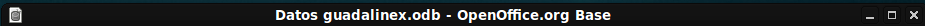
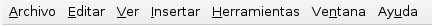
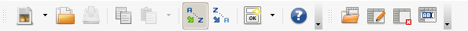
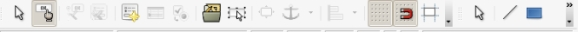
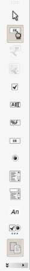
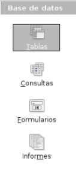
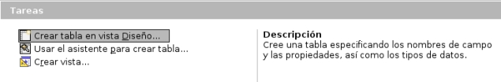

Barra de título: espacio destinado a mostrar el título de la ventana, que engloba el nombre de la base de datos, y el nombre del programa que estamos utilizando, en este caso, OpenOffice.org Base. En la barra de título se encuentran los botones para minimizar, maximizar, o cerrar la ventana.

Barra de menús: espacio situado debajo de la barra de título. Contiene una serie de opciones a elegir por el usuario para realizar determinadas tareas en nuestra base de datos. Estas opciones se recogen a modo de 9 menús desplegables: Archivo, Editar, Ver, Insertar, Herramientas, Ventana, y Ayuda.


Barra de herramientas de formato: situada en la parte inferior de la ventana de los informes y formularios y que ofrece opciones para insertar elementos como líneas, rectángulos, cuadrículas, campos, guías de desplazamiento, navegador de formularios, etc…

Barra de botones: está colocada en el lateral izquierdo de los informes y formularios. Permite añadir, a través de botones, muchas otras opciones que completan el aspecto y la funcionalidad inicial. Ofrece herramientas del tipo, casillas de verificación, cuadros donde se puede incluir texto, botones de opción, listados, cuadros combinados, etc…

Panel lateral: contiene los cuatro grandes apartados en los que se divide la base de datos, es decir, tablas, consultas, formularios e informes. Para acceder a cualquiera de ellos solo tienes que hacer clic encima de los botones, y además el programa te mostrará en un cuadro situado en la parte central de la pantalla el listado de lo que hayas ido haciendo dentro de cada apartado.

Cuadro central de tareas: te muestra las opciones disponibles para crear tablas, consultas, formularios o informes, según el botón que tengas seleccionado en el panel de la base de datos. Estas opciones pueden ser crear en modo de vista diseño o usando el asistente.

Anterior: 2- Abro una base de datos nueva o que ya existe.
Siguiente: 4- Las tablas.
{kind=link}
{kind=link}
{kind=link}
{kind=link}
{kind=link}
{kind=link}
{kind=link}